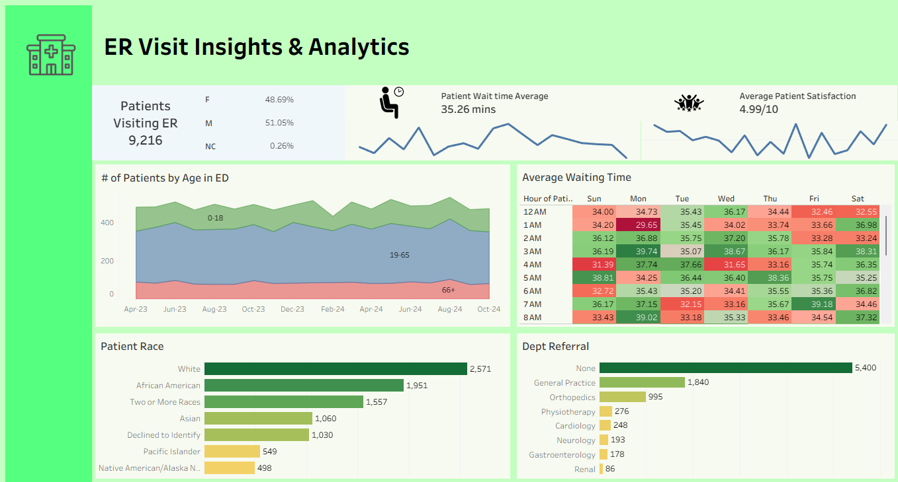

An interactive Tableau dashboard designed to monitor and optimize hospital Emergency Department operations. This tool visualizes key patient metrics—including wait times, demographics, and satisfaction scores to help hospital administrators and clinical leads identify bottleneck areas and improve the overall patient experience.
